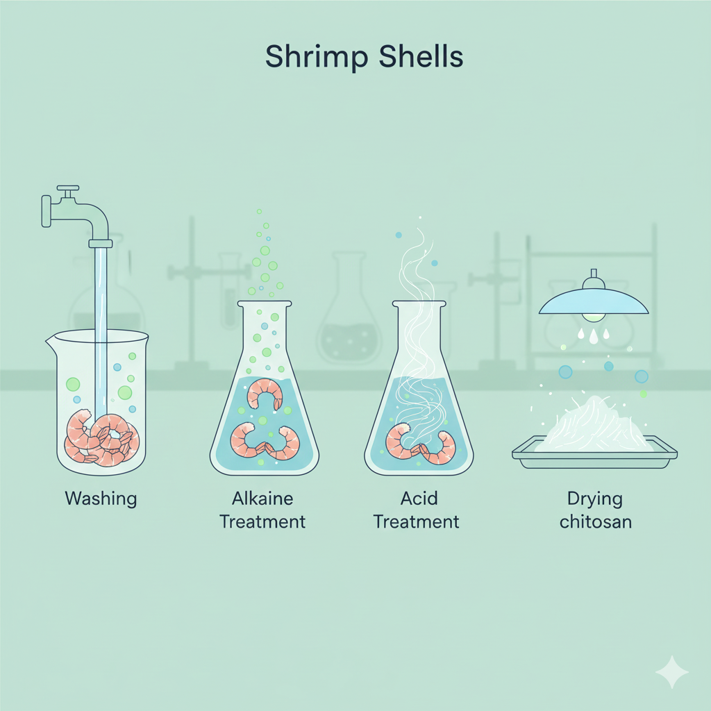
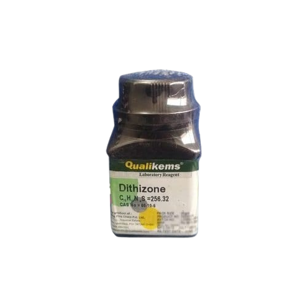
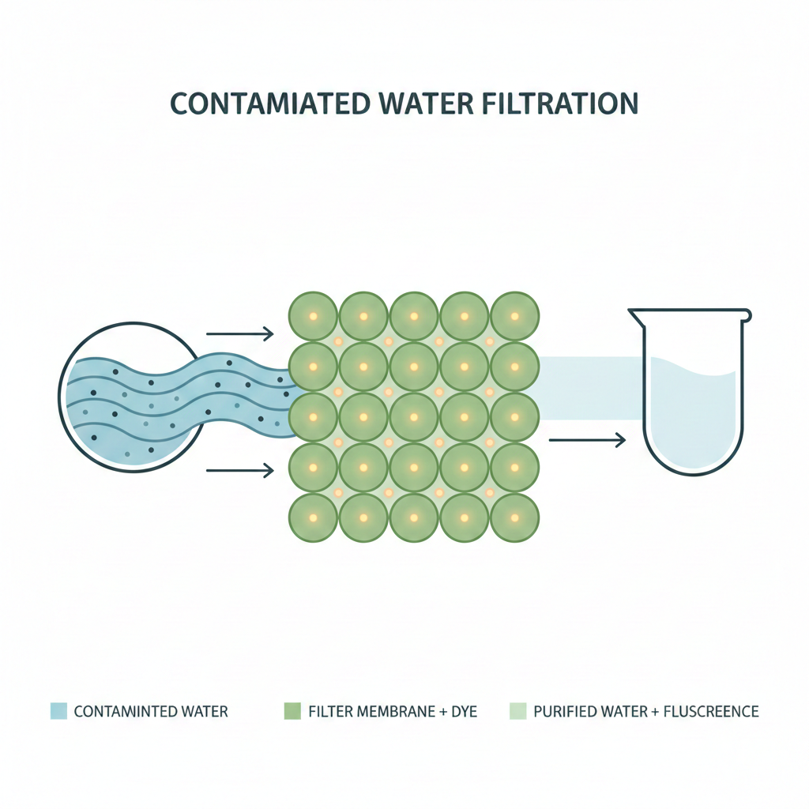
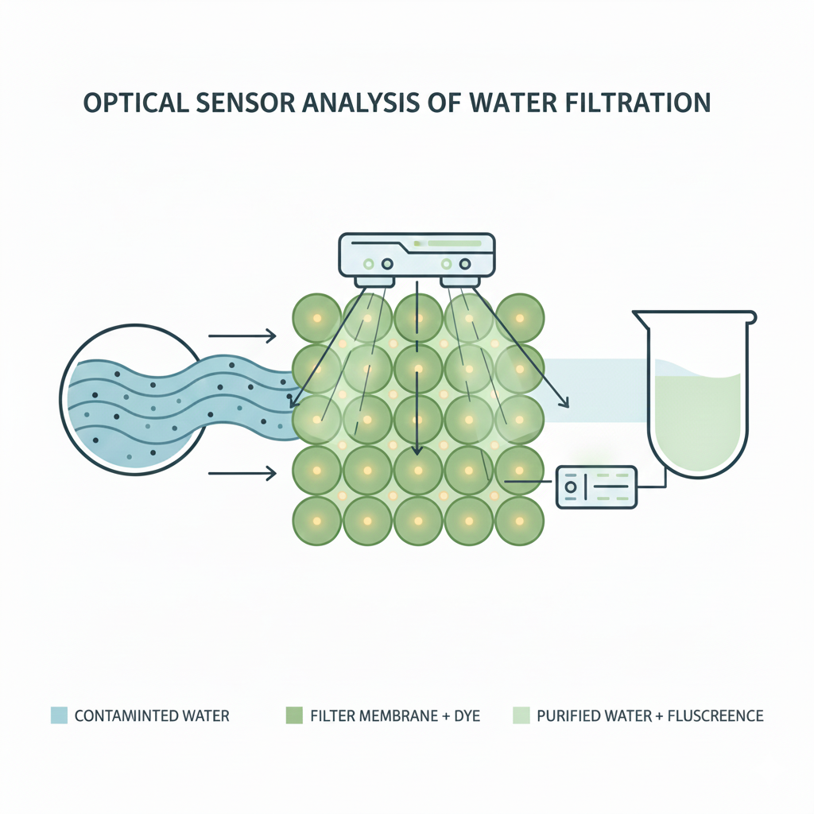
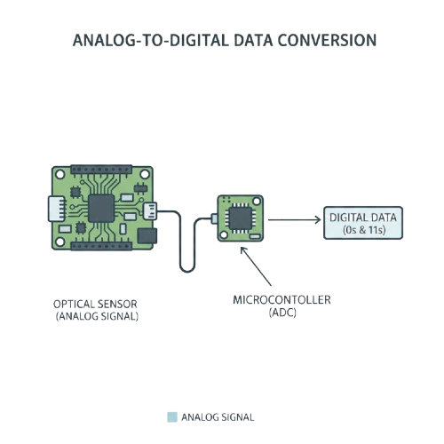
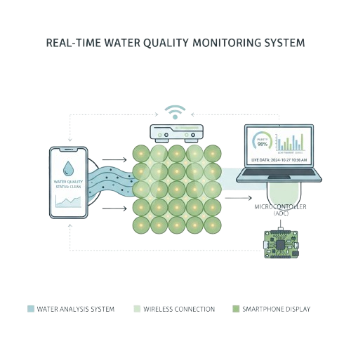

Nano-Enhanced Two-Stage
Water Filter
An advanced, low-cost filtration system with integrated dye-based pollution detection for real-time water quality analysis.
Eco-Friendly
Utilizing sustainable, biodegradable materials like Chitosan from shrimp shells and Nano-cellulose from rice straw.
Smart Detection
Two-stage filtration combined with dye-based sensors for continuous, real-time contamination sensing.
Assured Cleanliness
Ensuring the final water quality is safe for use, significantly reducing health risks associated with polluted water.
The Global Water Crisis
Understanding the scale of water pollution and its impact on humanity.
Water pollution is one of the most critical environmental challenges of our time. Every year, millions of lives are lost, and ecosystems are devastated due to contaminated water sources.
The statistics are alarming, painting a grim picture of the future if immediate and effective solutions are not implemented. Our project aims to be one such solution.
Materials and Cost Analysis
Evaluation of the main components and their associated costs (per 5 grams).
| Material / Dye | Cost (Unit) |
|---|---|
| Chitosan | 50 |
| Nano cellulose | 960 |
| Bromothymol Blue | 250 |
| Dithizone | 850 |
| Fluorescein Diacetate | 4850 |
Note: Costs provided are per 5 grams of material/dye for prototype estimation purposes.
Materials Preparation Process
Step-by-step protocol for extracting and preparing the core components of the filter.

Overall process for Chitosan extraction.
Part 1: Chitosan Extraction
1. Deproteinization (Alkaline Treatment)
Boil washed shrimp shells in a 5-9% NaOH solution at 60-90°C for 2 hours. Wash until the pH is neutral.
2. Demineralization
Soak the shells in a 1-2% HCl solution at room temperature for 2 hours to remove minerals like calcium carbonate. Wash thoroughly.
3. Deacetylation (Chitin to Chitosan)
Heat the resulting chitin in a 40-60% NaOH solution at 90-100°C for 2 hours. This converts chitin into chitosan. Wash and dry the final product.
Yield: Approx. 15-25% of the initial shell weight.

Overall process for Nano-cellulose extraction.
Part 2: Nano-cellulose Extraction
1. Pre-treatment
Wash, dry, and grind rice straw into small ~5mm pieces.
2. Lignin & Hemicellulose Removal
Boil the straw in a 4-10% NaOH solution at 80-90°C for 2 hours to obtain purer cellulose. Wash and dry.
3. Bleaching
For final lignin removal, boil the cellulose in a 3-5% NaClO or H₂O₂ solution for 2 hours. This whitens the cellulose.
4. Acid Hydrolysis & Sonication
Convert cellulose to nano-cellulose by acidifying with H₂SO₄ for 60 minutes with manual stirring. Follow with mechanical treatment using an ultrasonicator to achieve nano-scale particles.
Detection Mechanism & Dyes
Using specific dyes, the system provides a rapid visual or sensor-based indication of contaminants.
Dyes for Contaminant Detection
Bromothymol Blue (BTB)
Purpose: pH Indicator
Detects changes in water acidity or alkalinity, which can indicate chemical pollution.
Yellow: pH < 6.0
Green: pH ≈ 7.0
Blue: pH > 7.6
Preparation: 2g in 100ml of 1% Acetic Acid solution.

Bromothymol Blue showing different pH colors.
Dithizone
Purpose: Heavy Metal Detection
Forms colored complexes with heavy metal ions (e.g., lead, mercury), causing a visible color change.
Preparation: 0.03g in 100ml Ethanol solution (Alcoholic Solution).

Dithizone reacting with heavy metals.
Fluorescein Diacetate (FDA)
Purpose: Microbial Activity Detection
A non-fluorescent compound that becomes fluorescent (green glow) when processed by enzymes in living microorganisms (bacteria).
Preparation: 0.01g in 0.2ml NH₄OH and 100ml water.

Fluorescence under UV light indicating microbial activity.
Data Analysis Workflow

Visualizing the dye reaction on the filter membrane.
1. Contact & Reaction
Contaminated water flows through the filter membrane, coming into contact with the embedded dyes, initiating a color change or fluorescence.

Optical sensor setup for real-time analysis.
2. Optical Sensing
An optical sensor (e.g., a spectrophotometer or color sensor) measures the change in color or fluorescence intensity, providing quantitative data.

Microcontroller board processing sensor data.
3. Digital Conversion
A microcontroller (like an Arduino or ESP32) converts the analog sensor reading into a digital value, preparing it for data processing.

Real-time water quality data displayed on a mobile device.
4. Data Display
The digital data is sent to a connected device (laptop or smartphone) for real-time display and analysis, providing an immediate assessment of water quality.
Prototype Results & Future Work
Key findings from prototype testing and future projections.
High Efficiency
We detected the pollution in water in a short period of time (after one minute from entering the water) with high efficiency.
Enhanced Surface Area
Converting cellulose to nanocellulose increased the surface area by 10–20 times, enhancing the layer's ability to bind dyes.
Stable Gel Formation
Mixing 60% chitosan with 40% nanocellulose produced a stable, viscous gel that could be easily molded onto a plate.
Bromothymol Blue
Exhibited subtle color changes with pH, with a rapid response (<1 minute).
Dithizone
Emitted distinct colors in the presence of heavy metal ions: red for lead, orange for copper, and pale green for zinc, allowing for both qualitative and quantitative detection.
Fluorescein Diacetate
Shown a green glow in the presence of live bacteria, demonstrating the dye's effectiveness in detecting microbes.
Future Work
- Integration of AI/ML algorithms for more accurate pollutant classification and concentration estimation.
- Scaling up membrane production using advanced techniques like electrospinning for wider availability.
Academic References
The scientific literature that informed this project.
- Tlili, I., & Alkanhal, T. A. (2019). Nanotechnology for water purification: electrospun nanofibrous membrane in water and wastewater treatment. Journal of Water Reuse and Desalination, 9(3), 232-248.
- Divya, K., Rebello, S., & Jisha, M. S. (2014). A simple and effective method for extraction of high purity chitosan from shrimp shell waste. In Proceedings of the international conference on advances in applied science and environmental engineering-ASEE (pp. 141-145).
- Pakizeh, M., Moradi, A., & Ghassemi, T. (2021). Chemical extraction and modification of chitin and chitosan from shrimp shells. European Polymer Journal, 159, 110709.
- Lai, V. W. X., Jamaluddin, J., Mat Nasir, N. A. F., Baharulrazi, N., Majid, R. A., Lai, J. C., ... & Adrus, N. (2022). Extraction of cellulose from rice straw for regeneration of hydrogels. Environmental Quality Management, 32(1), 333-341.
- Marschke, R. J., & Kitchen, B. J. (1985). Detection of bovine mastitis by bromothymol blue pH indicator test. Journal of dairy science, 68(5), 1263-1269.
- Arafat, M. T., Mahmud, M. M., Wong, S. Y., & Li, X. (2021). PVA/PAA based electrospun nanofibers with pH-responsive color change using bromothymol blue and on-demand ciprofloxacin release properties. Journal of Drug Delivery Science and Technology, 61, 102297.